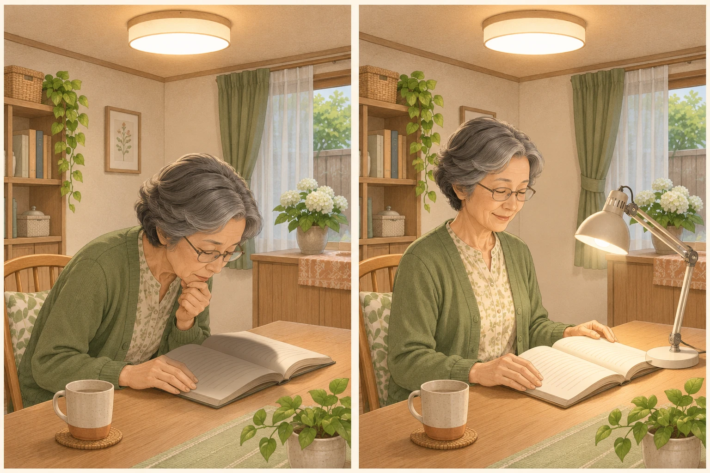
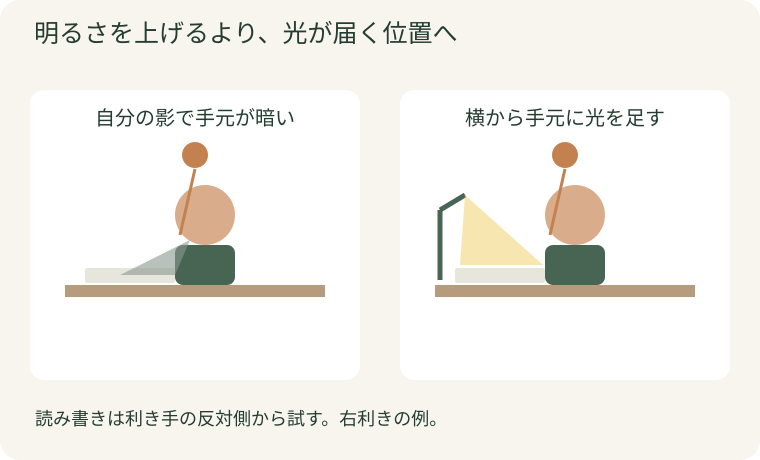
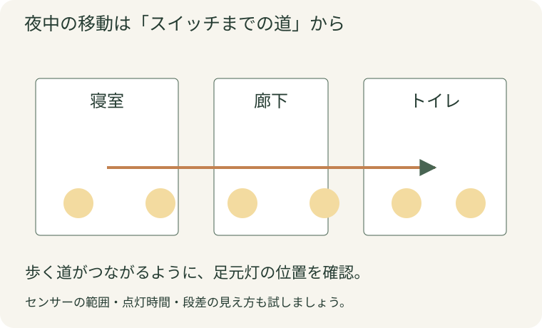
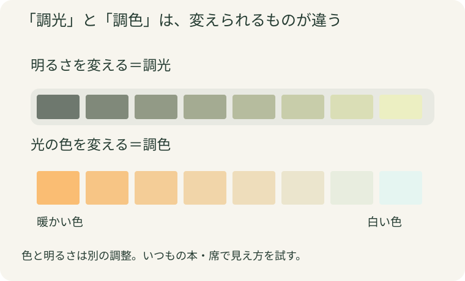

夕食のあと、新聞を読もうとすると文字が見えにくい。天井の照明をいちばん明るくしても、今度はまぶしくて落ち着かない。そんな経験はありませんか。
このとき試してほしいのは、もっと明るい照明への交換よりも、「読みたい場所に、どこから光を届けるか」を変えることです。部屋全体が明るくても、手元が自分の影に入っていたり、紙面に光が反射していたりすると、見えにくさは残ります。
今回は、読書、料理、夜中の移動という身近な場面から、照明の選び方とリフォーム会社への伝え方を紹介します。まずは、いつも座る席で一つ試してみましょう。
読書の席には手元灯、夜の通り道には足元灯。使う場所に光を足すと、家じゅうをまぶしくすることなく調整できます。
1. 電気を強くする前に、見えにくさを見分ける
新聞をいつもの場所に置き、普段の姿勢で見てください。次のどれが気になりますか。
| 気になること |
まず試すこと |
| 自分の頭や手の影が紙面に落ちる |
卓上灯を置き、手元に光を届ける |
| 電球や照明器具が目に入ってまぶしい |
座る位置や器具の向きを変え、光源を直接見ない配置にする |
| 紙面やテレビに白い光が映り込む |
紙や画面の角度、窓や照明との位置関係を変える |
| 足元や部屋の隅が暗い |
その場所を照らす灯りを足す |
「見えにくい」は、全部同じ原因ではありません。影が困るのか、まぶしさが困るのかが分かれば、買うものも変わります。昼は気にならなくても夜だけ読みにくいなら、まず夜の状態で試すのがおすすめです。
2. 読書の席には、天井灯と手元灯の組み合わせを
天井灯一つで、食事も読書もテレビもまかなっていませんか。細かい文字を読む席には、卓上灯などで手元の光を足すと調整しやすくなります。
読み書きなら、利き手の反対側から光を当てる位置を出発点にしてみてください。右利きなら左側です。実際にペンを動かし、手の影が紙面を覆わない位置へ少しずつ動かします。
大事なのは、机だけを明るくして周囲を真っ暗にしないこと。天井灯もつけたうえで手元を補い、光源が目に入らず、紙面に反射しない角度に調整しましょう。
照明を選ぶときは、いつも読む本や新聞を使って試す。 売り場の見た目だけより、自分に合う光を選びやすくなります。

天井灯に手元灯を組み合わせ、読みたい場所へ光を届けるイメージ。実際の配置は、影や反射を見ながら調整しましょう。
右利きの例。手元灯を動かして、影と反射が少ない場所を探します。図を拡大して見る3. キッチンは「立ったとき」、廊下は「夜歩くとき」で考える
照明計画は、空の部屋ではなく、人が使う姿を想像すると失敗が減ります。
調理台：まな板に、自分の影が落ちていませんか
調理台に立って、いつもの位置にまな板を置いてみてください。天井灯が背中側にあると、体で光を遮ることがあります。キッチンを交換するなら、吊戸棚下の手元灯など、作業面へ直接光が届く配置もセットで相談を。「ここで切る・ここで洗う」と立ち位置を示すと、必要な明るさと器具の場所が伝わります。
廊下：スイッチへ行くまでの暗がりを減らす
夜中に寝室からトイレへ歩く道を確認し、段差・曲がり角・階段に光が届くように足元灯や人感センサー照明を配置します。センサーの反応範囲と点灯時間も試しておきましょう。
リビング：読書とくつろぎ、灯りを使い分ける
読書には手元灯、食後にはやわらかな間接照明。用途を分けると、いつも天井灯を最大にするより調整しやすくなります。置き型の灯りは、コードが通り道を横切らない配置にしてください。

寝室からトイレまで、灯りが途切れる場所を確認します。図を拡大して見る4. 「色」と「明るさ」を別々に選ぶと迷わない
照明売り場には「電球色」「昼白色」「調光」「調色」などの表示があります。
- 光の色：電球色は暖かみのある色、昼白色は自然な白色。過ごし方や好みで選びます。
- 調光：明るさを変える機能。読書とくつろぐ時間の切り替えに便利です。
- 調色：光の色を変える機能。同じ部屋をいろいろな用途で使うときの選択肢になります。
白い光だから必ず明るい、暖かい色だから必ず暗い、というわけではありません。色だけで決めず、必要な場所が見えるかを確かめましょう。食材や服の色の見え方が気になる場合は、色を自然に見せる「演色性」も相談できます。
今ある器具の電球だけを替える場合は、口金や明るさだけでなく、密閉器具や調光器への対応も確認してください。取り付けられても、適合しているとは限りません。

調光と調色のイメージ。製品ごとに調整範囲は異なります。図を拡大して見る5. リフォーム会社には、いつもの席を見てもらう
いつもの暮らしが分かる写真とメモを用意しましょう。次の三つがあると、話が具体的になります。
- 困る場面：「夜、ここで新聞を読むと手元が影になる」
- 家具の位置：机、椅子、テレビを置く場所が分かる写真や簡単な図
- かなえたい使い方：「読書は明るく、食後は落ち着いた光にしたい」
照明の位置、スイッチ、コンセントを変えるなら、家具の配置と一緒に決めるのがおすすめです。内装を仕上げてから「ここに手元灯を置きたかった」と気づくより、配線を計画しやすくなります。固定配線の変更は電気工事業者に任せましょう。
今夜、いつもの本で試してみよう
天井灯をつけたまま手元灯の位置を動かし、影・まぶしさ・反射を確認。改善した位置を写真に残すと、照明リフォームの相談にも使えます。
よくある質問
Q. まず一つ買うなら、何がおすすめですか？
読書や書き物が困るなら、光の向きと明るさを調整できる手元灯から。部屋全体を買い替える前に、いつもの席で見え方を試せます。
Q. LEDに替えれば見えやすくなりますか？
LEDかどうかだけでは決まりません。手元に光が届く位置、まぶしさ、反射も一緒に見直しましょう。
Q. 照明を変えても見えにくいときは？
目の状態も関わるので眼科へ相談を。急に見え方が変わったり痛みが出たりした場合は、照明調整より先に受診してください。
家族と話し合おう
「家でいちばん見えにくいのは、どこで何をしているとき？」。それぞれの席に座ってみると、同じ部屋でも違う困りごとが見えてきます。